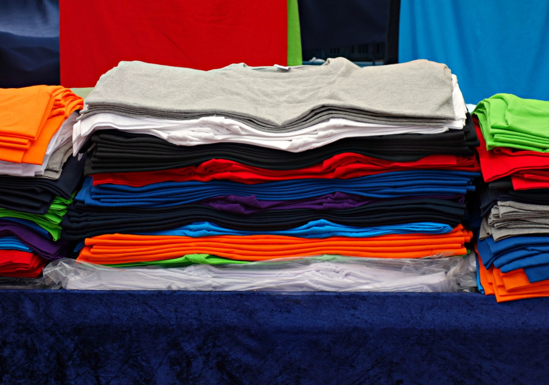
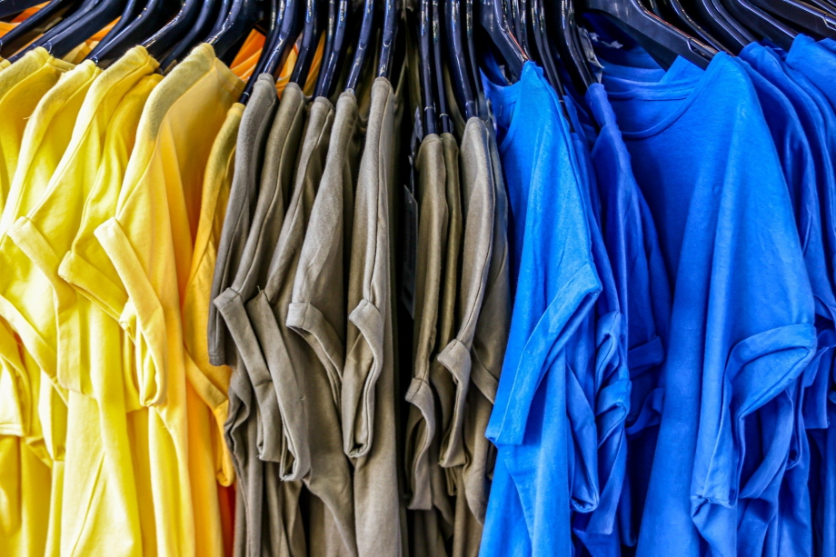
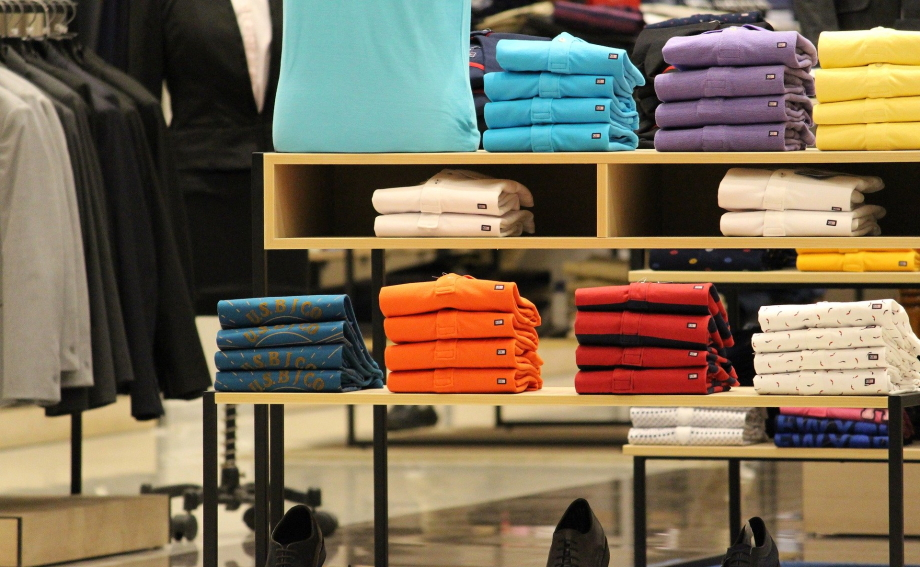

We design your shirt for you, We are a small team of freelancer that works for Graphic and Design for any type of shirts.
Broadcloth—often referred to as poplin–is a tightly woven fabric with a very simple over-under weave and very little sheen, which makes it nice and professional. Broadcloths are great for guys looking for as little texture as possible in their fabrics. They are generally a thinner, lighter fabric. Particularly, white broadcloth fabrics can be slightly transparent. Broadcloths generally wear the smoothest out of all weaves thanks to their lack of texture, but can also be the most prone to wrinkling.
Twill fabrics are easily recognizable because they will show diagonal weave or texture. The diagonal effect can range from very fine, subtle twills to much larger Imperial or Cavalry twills. Twills will almost always have a bit of shine, though the degree can depend on the weave, color, and cotton used. Twill is an extremely tight weave, that can come in extremely high thread counts, some of which might be mistaken for silk. Because of the diagonal texture twill is a bit softer than broadcloth and will drape more easily. Twill won’t give you the same “crisp” look that freshly pressed broadcloth can, but it’s relatively easy to iron and resistant to wrinkles.
Pinpoint (also referred to as pinpoint oxford) has the same weave as oxford cloth, although it uses a finer yarn and tighter weave. It is more formal than oxford cloth, but less formal than broadcloth or twill. Think of them as great everyday work shirts, but not necessarily the first recommendation for special events. Pinpoint fabrics are generally not transparent and are slightly heavier and thicker than broadcloths. Because of their heavier construction, pinpoints are fairly durable fabrics. Opt for a twill or broadcloth if you’re looking for a formal shirt.
